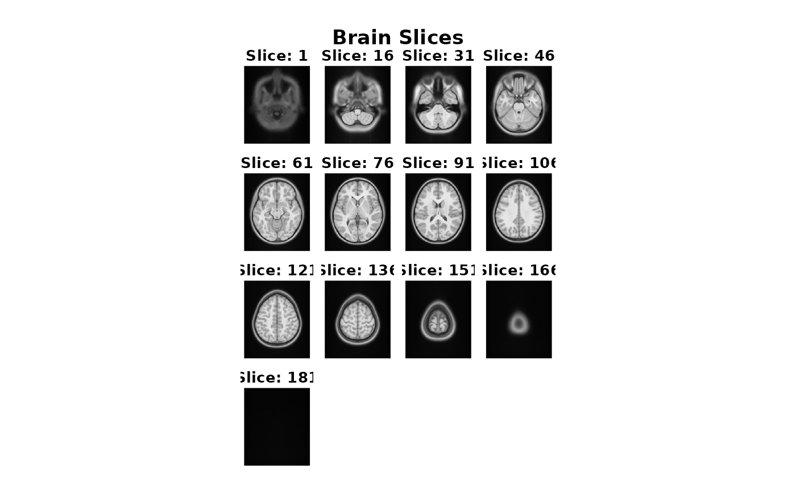

Reading a NIFTI formatted image volume
The way to read an volumetric image file is to use
read_vol:
library(neuroim2)
#> Loading required package: Matrix
file_name <- system.file("extdata", "global_mask.nii", package="neuroim2")
vol <- read_vol(file_name)Working with image volumes
Information about the geometry of the image volume is shown here:
print(vol)
#> NeuroVol
#> Type : DenseNeuroVol
#> Dimension : 64 64 25
#> Spacing : 3.5 X 3.5 X 3.7
#> Origin : 110 X -110 X -46.2
#> Axes : Right-to-Left Posterior-to-Anterior Inferior-to-Superiorread_vol returns an object of class
NeuroVol object which extends an R array and
has 3 dimensions (x,y,z).
class(vol)
#> [1] "DenseNeuroVol"
#> attr(,"package")
#> [1] "neuroim2"
is.array(vol)
#> [1] TRUE
dim(vol)
#> [1] 64 64 25
vol[1,1,1]
#> [1] 0
vol[64,64,24]
#> [1] 0Arithmetic can be performed on images as if they were ordinary
arrays:
vol2 <- vol + vol
sum(vol2) == 2 * sum(vol)
#> [1] TRUE
vol3 <- vol2 - 2*vol
all(vol3 == 0)
#> [1] TRUEA numeric image volume can be converted to a binary image as follows:
vol2 <- as.logical(vol)
class(vol2)
#> [1] "LogicalNeuroVol"
#> attr(,"package")
#> [1] "neuroim2"
print(vol2[1,1,1])
#> [1] FALSEWe can also create a NeuroVol instance from an
array or numeric vector. First we consruct a
standard R array:
Now we reate a NeuroSpace instance that describes the
geometry of the image including, at minimum, its dimensions and voxel
spacing.
bspace <- NeuroSpace(dim=c(64,64,64), spacing=c(1,1,1))
vol <- NeuroVol(x, bspace)
vol
#> NeuroVol
#> Type : DenseNeuroVol
#> Dimension : 64 64 64
#> Spacing : 1 X 1 X 1
#> Origin : 0 X 0 X 0
#> Axes : Left-to-Right Posterior-to-Anterior Inferior-to-SuperiorWe do not usually have to create NeuroSpace objects,
because geometric information about an image is automatically determined
from information stored in the image file header. Thus,
NeuroSpace objects are usually copied from existing images
using the space extractor function when needed:
Writing a NIFTI formatted image volume
When we’re ready to write an image volume to disk, we use
write_vol
write_vol(vol2, "output.nii")
## adding a '.gz' extension results ina gzipped file.
write_vol(vol2, "output.nii.gz")We can also display a NeuroVol instance. Lets download
an MNI image from the web and plot it.
temp <- tempfile()
uri = "http://www.bic.mni.mcgill.ca/~vfonov/nihpd/obj1/nihpd_asym_07.5-13.5_nifti.zip"
download.file(uri,temp)
cmd <- paste("unzip ", "-d", dirname(temp), temp)
system(cmd)
vol <- read_vol(paste0(dirname(temp), "/nihpd_asym_07.5-13.5_t1w.nii"))
Now we can display it using the plot command. We will
show every 15th slice.
